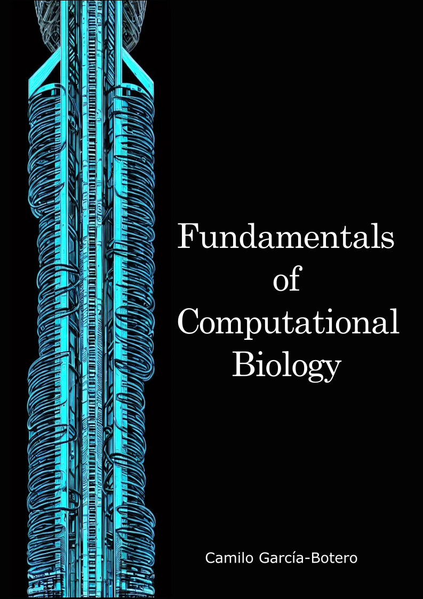

Fundamentals of computational biology
Lecture notes
An introductory book built upon several lectures about computational biology.
Camilo García-Botero ![]()

Preface
We started this book with the aim of compiling the lectures of the course Fundamentals of Computational Biology offered at EAFIT University for undergrad students in Biology. The course has been taught from different perspectives from its creation. All main units are depicted in this book, although the course is mainly composed from at least four of them. We suggest to cover the first three units/parts and vary the last. Units in this book are partitioned as follows: i) Unix, ii) sequence analysis, iii) genomics, iii) metagenomics iv) RNA seq v) structural biology.
Lectures are focused on a theoretical-practical approach where basic concepts from biology, bioinformatics and computer science and interleave with the practice to solve challenges. Exercises or challenges are designed to improve students’ abilities that are likely to be involved in real-life problems in computational biology.
Learning features
Sometimes other fields might add interested value to the understanding of the computational biology area. This feature remarks some of them and aim to explain these intersections.
As you move forward in the computational biology field you will find that there are several tips and tricks (mainly from the command line) as well as some random CLI programs that can leverage your daily workflow as a researcher. Using this feature we highlight some of those that appeared to linger on the field.
To help you consolidate your understanding we end most chapters with important messages or concepts that help you evaluate yourself as you move forward on the lessons.
When experimenting with the CLI and many other computational tools it is common to face several known errors and drawbacks. Then, we present some of them and how to sort them out.
Since focused on a competences learning approach we have highlighted several real-life (but basic) challenges a researcher faces when approaching computational biology problem (from tool selection, usage and result analysis). Therefore the book section challenges presents a selection of these problems that will later be approached by a computational biology strategy (mainly from the CLI).